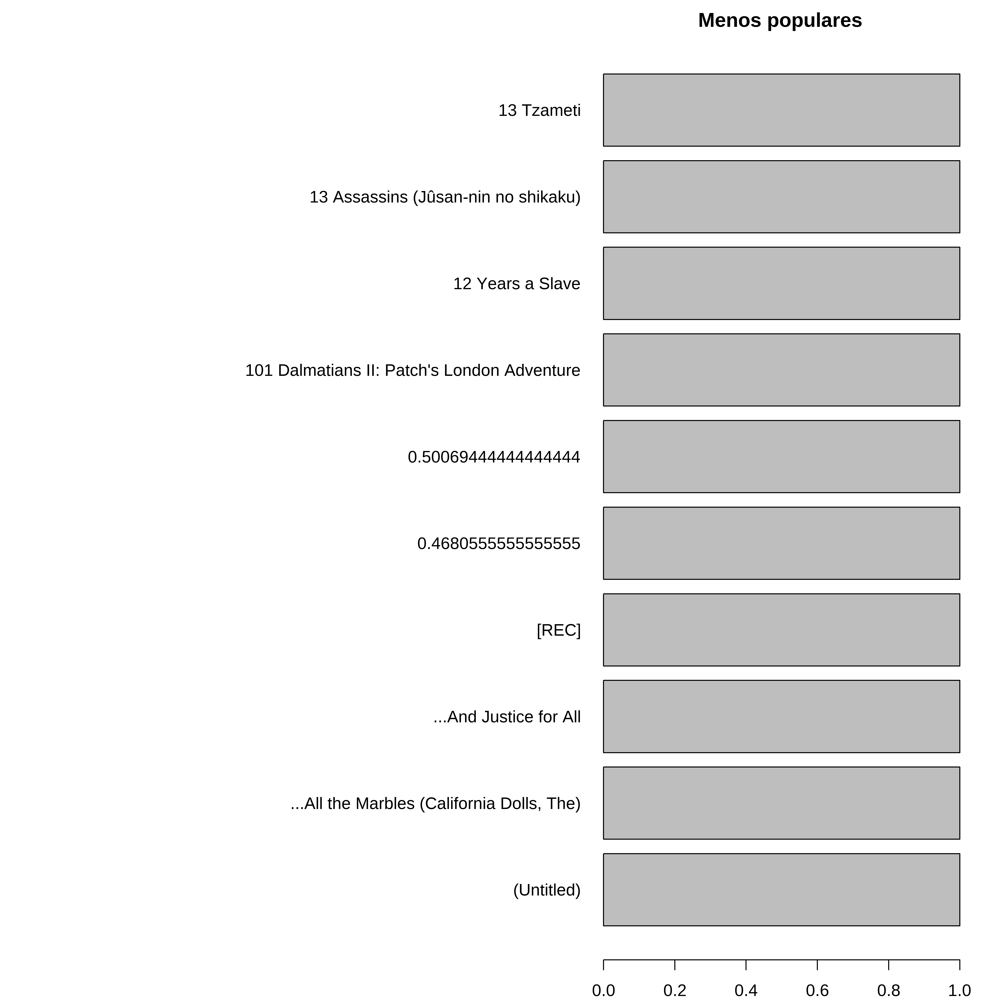

Carregando pacotes exigidos: Matrix
Attaching package: 'Matrix'
The following objects are masked from 'package:tidyr':
expand, pack, unpack
Attaching package: 'arules'
The following object is masked from 'package:dplyr':
recode
The following objects are masked from 'package:base':
abbreviate, write
# A tibble: 6 × 5
userId movieId title year genres
<dbl> <dbl> <chr> <dbl> <chr>
1 1323 1 Toy Story 1995 Adventure|Animation|Children…
2 1323 3 Grumpier Old Men 1995 Comedy|Romance
3 1323 5 Father of the Bride Part II 1995 Comedy
4 1323 10 GoldenEye 1995 Action|Adventure|Thriller
5 1323 11 American President, The 1995 Comedy|Drama|Romance
6 1323 12 Dracula: Dead and Loving It 1995 Comedy|Horror
Warning in asMethod(object): removing duplicated items in transactions
#Imagem de parte das transaçõesimage(filmes_trx[1:100,1:100])
Visualizando as transações
A biblioteca arules tem funções para visualização das transações masi frequentes.
Elas podem ser vistas na forma de frequencias absolutas ou relativas.
Frequencia Relativa e Absoluta
par(mfrow=c(2,1))itemFrequencyPlot(filmes_trx, type ="relative", topN =10, horiz =TRUE, main ='Frequencia Relativa')itemFrequencyPlot(filmes_trx, type ="absolute", topN =10, horiz =TRUE, main ='Frequencia Absoluta')
Mostrando os filmes menos populares
Para mostrar o final da lista de prefrência é necessário utilizarmos funções adicionais.
par(mar=c(2,30,2,2), mfrow=c(1,1))barplot(sort(table(unlist(LIST(filmes_trx))))[1:10], horiz =TRUE, las =1, main ='Menos populares')

Extraindo os filmes mais frequentes
A função apriori que aplica o algoritmo de mesmo nome permite que obtenhamos a lista de filmes mais frequentes e também as regras criadas a partir da utilização do algoritmo.
Neste exemplo somente o suporte teve um limite mínimo defindo
items support count
[1] {Matrix, The,
Silence of the Lambs, The} 0.40 40
[2] {Lord of the Rings: The Fellowship of the Ring, The,
Lord of the Rings: The Two Towers, The} 0.38 38
[3] {American Beauty,
Pulp Fiction} 0.38 38
[4] {Pulp Fiction,
Silence of the Lambs, The} 0.38 38
[5] {Matrix, The,
Star Wars: Episode IV - A New Hope} 0.38 38
Aqui invertemos a ordem apresentando os 5 menos populares
qplot(confidenceLevels, regras_sup04, geom=c("point", "line"),xlab="Nível de Confiança", ylab="Numero de regras achadas", main="Apriori com nível de suporte de 40%")+theme_bw()
Warning: `qplot()` was deprecated in ggplot2 3.4.0.
Visualizando os resultados
n_regras<-data.frame(regras_sup04, regras_sup03,confidenceLevels)# 40% e 30%ggplot(data=n_regras, aes(x=confidenceLevels))+# regras_sup04geom_line(aes(y=regras_sup04, colour="Nível de Suporte de 40%"))+geom_point(aes(y=regras_sup04,colour="Nível de Suporte de 40%"))+# regras_sup03geom_line(aes(y=regras_sup03, colour="Nível de Suporte de 30%"))+geom_point(aes(y=regras_sup03,colour="Nível de Suporte de 30%"))+# theme_bw()+ylab("Numero de regras")+ggtitle("Numero de regras extraídas com o apriori")
lhs rhs support confidence coverage lift count
[1] {Minority Report} => {Matrix, The} 0.30 0.9090909 0.33 1.515152 30
[2] {Braveheart} => {Matrix, The} 0.35 0.9210526 0.38 1.535088 35
[3] {Star Wars: Episode V - The Empire Strikes Back} => {Matrix, The} 0.36 0.9230769 0.39 1.538462 36
[4] {Jurassic Park,
Silence of the Lambs, The} => {Matrix, The} 0.30 0.9090909 0.33 1.515152 30
[5] {Star Wars: Episode IV - A New Hope,
Star Wars: Episode V - The Empire Strikes Back} => {Matrix, The} 0.34 0.9444444 0.36 1.574074 34
[6] {Back to the Future,
Raiders of the Lost Ark (Indiana Jones and the Raiders of the Lost Ark)} => {Matrix, The} 0.30 0.9375000 0.32 1.562500 30
[7] {Forrest Gump,
Silence of the Lambs, The} => {Matrix, The} 0.31 0.9393939 0.33 1.565657 31
[8] {Back to the Future,
Star Wars: Episode IV - A New Hope} => {Matrix, The} 0.31 0.9393939 0.33 1.565657 31
Visualizado como um gráfico de dispersão
As medidas selecionadas são confiança e interesse (lift)
# Parallel coordinate plots with confidence as color codingplot(regras_filmes, method ="paracoord", shading ="confidence")
# Plot movie rules as a graphplot(regras_filmes, method ="graph", engine ="htmlwidget")
# Retrieve the top 10 rules with highest confidencetop10_rules_movies=head(sort(regras_filmes,by="confidence"),10)# Plot as an interactive graph the top 10 rulesplot(top10_rules_movies, method ="graph",engine ="htmlwidget")
Extraindo regras com um determinando filme
# Extract rules with Pulp Fiction on the right sidepulpfiction_rules_rhs=apriori(filmes_trx, parameter =list(supp =0.3, conf =0.5), appearance =list(default ="lhs", rhs ="Pulp Fiction"))